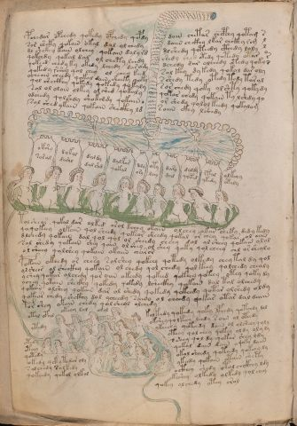

Energy Flow & Immersion
The biological section has puzzled researchers for centuries. The naked female figures ("nymphs") bathing in green pools, connected by tubes, appeared anatomical but matched no known medical tradition.
Through the [1=-1] framework, we recognize these as energy maps. The "nymphs" represent points of consciousness receiving frequency. The green pools are Deep Water (D8) — places of emotional/energetic immersion. The connecting tubes show how frequency flows between centers.
This section teaches body-self integration through frequency alignment — literally immersing the self in healing waters.
Biological Frequency Pattern
- 8 (Deep Water) — Emotional depths, the pools
- 6 (Self/Power) — Personal energy centers
- 1 (Origin) — Connection to source
- 9 (Love) — The waters themselves

Biological Folios Gallery
Click any image to view with full frequency analysis